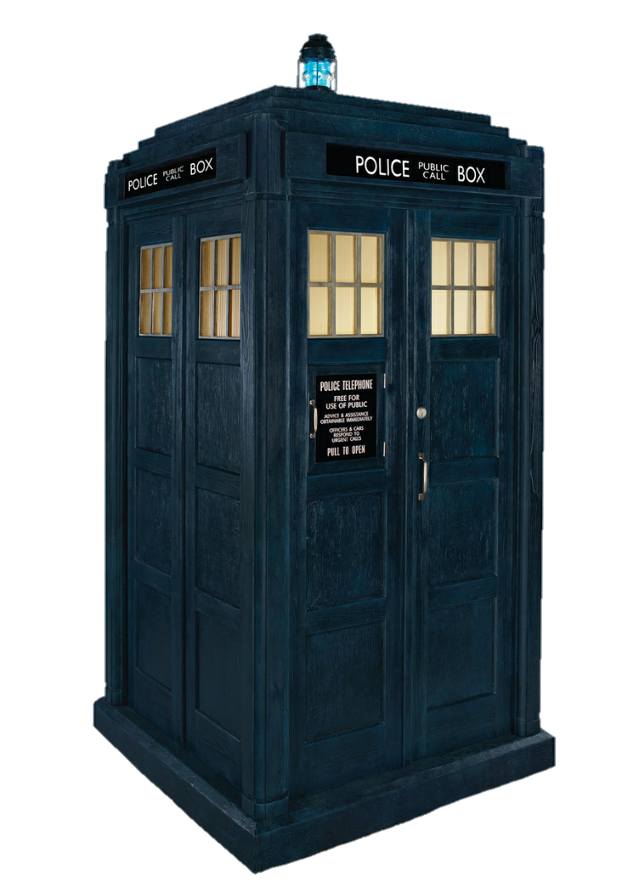
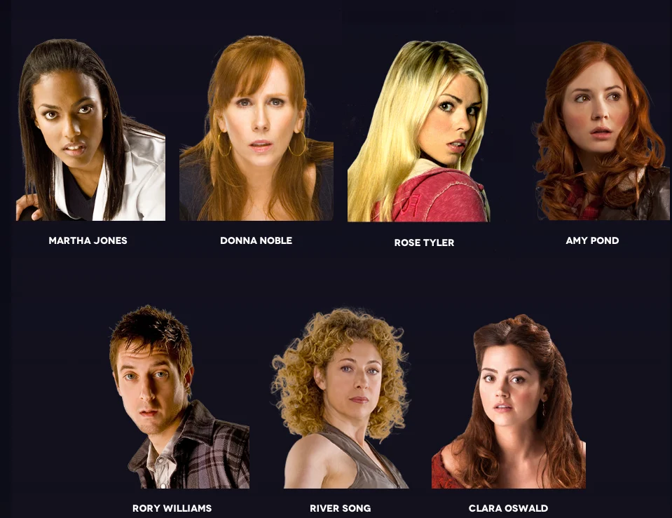
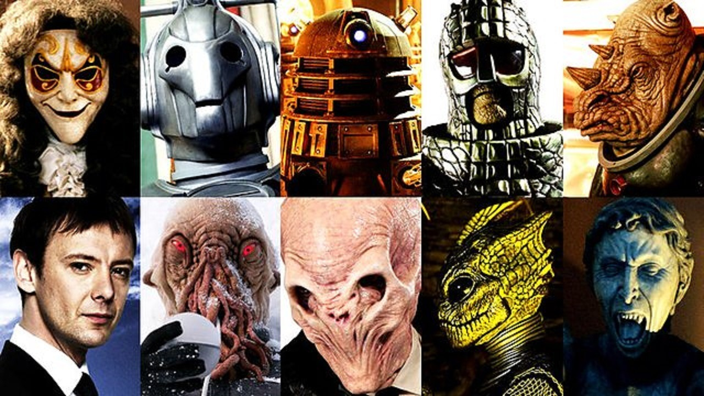
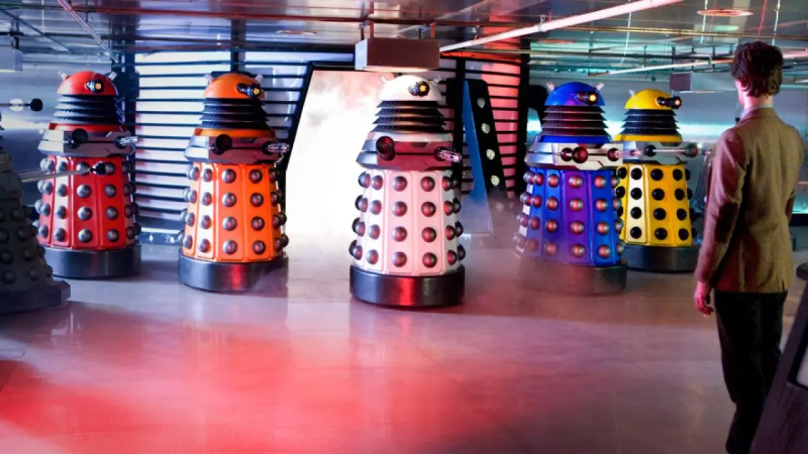
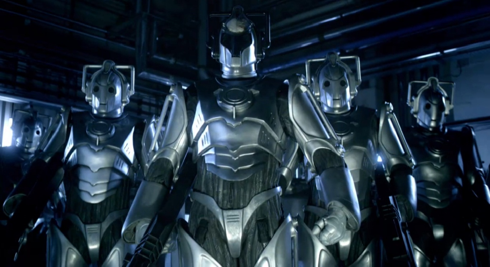
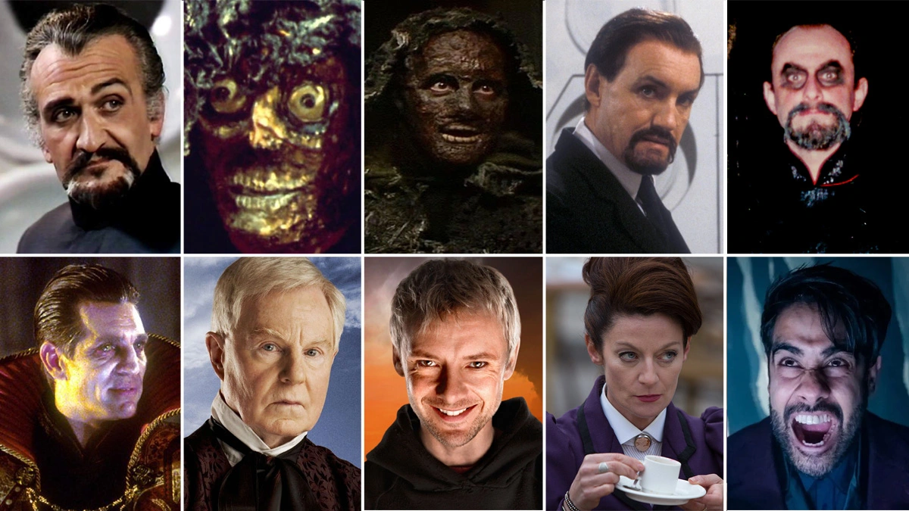

Doctor Who é uma série de ficção científica britânica, produzida e
transmitida pela BBC desde 1963.
A série mostra as aventuras do Doutor, um Senhor do Tempo alienígena
do planeta Gallifrey, que explora o universo em sua máquina do tempo,
uma sensível nave espacial conhecida como TARDIS(time and relative
dimension in space), cuja aparência exterior se assemelha a uma cabine
de polícia londrina de 1963. Juntamente aos seus
companheiros, o Doutor enfrenta uma
variedade de inimigos, enquanto
trabalha para salvar as civilizações,
ajudar as pessoas comuns e corrigir
erros. O programa originalmente
funcionou de 1963 a 1989. Depois de
uma tentativa frustrada de retomar
a produção normal em 1996 com um
piloto secreto na forma de um filme
para a televisão, o programa foi
relançado em 2005 por Russell T
Davies, que era um produtor executivo
e escritor chefe nos cinco primeiros
anos de seu renascimento, produzidos
pela BBC Wales, em Cardiff.
Quinze atores e uma atriz já
atuaram na série como 13 diferentes
encarnações do Doutor (o Primeiro
Doutor foi interpretado por três
atores diferentes, enquanto John Hurt
interpretou uma versão especial do
personagem). A transição de um ator
para outro é descrito no enredo do
show como a regeneração, um processo
de vida dos Senhores do Tempo através
do qual o personagem do Doutor assume
um novo corpo, e de certa forma,
nova personalidade, que ocorre quando
este sofre uma lesão que seria fatal
para a maioria das outras
espécies.[13] Apesar de cada
interpretação ser diferente, e em
algumas ocasiões uma encarnação
encontrar outra, elas são pensadas
para serem aspectos do mesmo
personagem. O Doutor
(atualmente A Doutora), é
interpretado por Jodie Whittaker que assumiu o papel depois da aparição final
de Peter Capaldi em "Twice Upon a Time" em 25 de dezembro de 2017.
Doctor Who segue as aventuras de um renegado Senhor do Tempo do planeta
Gallifrey que simplesmente atende pelo nome de "Doutor". Ele fugiu
de seu planeta natal em uma TARDIS (abreviação para "Time and Relative
Dimensions in Space" em português "Tempo e Dimensões Relativas no
Espaço") Tipo 40 - o que lhe permite viajar através do tempo e espaço.
Devido a um mau funcionamento do "circuito camaleão" da TARDIS, que
normalmente permite que a TARDIS possa assumir a aparência de objetos
locais para disfarçar-se, a TARDIS do Doutor permanece fixa como uma
cabine telefônica policial britânica.[28] O Doutor raramente viaja sozinho
e muitas vezes traz um ou mais
companheiros para compartilhar essas
aventuras. Como um Senhor do Tempo, o Doutor tem a capacidade de se
regenerar quando seu corpo é mortalmente danificado, ganhando uma nova
aparência e personalidade. O Doutor ganhou inúmeros inimigos recorrentes
durante as suas viagens, incluindo
Daleks,
Cybermen e outro Senhor
do Tempo renegado, o
Mestre.
Companheiros

Desde 1963 mais de 35 atores foram apresentados nestes papéis. Os
acompanhantes originais do Primeiro Doutor eram sua neta Susan Foreman
(Carole Ann Ford) e os professores Barbara Wright (Jacqueline Hill) e Ian
Chesterton (William Russell). A única história da série clássica em que O Doutor
viaja sozinho é no arco 088 da 14.ª temporada. O Doutor regularmente
ganha novos companheiros e perde os antigos; às vezes eles voltam para casa,
têm a memória apagada, encontram razões para permanecer na Terra ou acabam
morrendo.
Desde o renascimento da série em 2005, o Doutor geralmente viaja com uma
companhia
feminina, que ocupa um papel de narrativa maior. Steven Moffat descreveu as
companheiras como o personagens principais do show, conforme a história começa
de novo com cada companheira e ela passa por mais mudanças do que o próprio
Doutor.
Adversários

Quando Sydney Newman encomendou a série, ele não queria "monstros de olhos
esbugalhados". No entanto, os monstros se tornaram populares com o público e
assim tornou-se importante para a série desde quase o início .
Com renascimento do show em 2005, vilões clássicos de Doctor Who foram
reintroduzidos em um passo de cada vez: os Autons com a consciência Nestene
e
Daleks na 1.ª temporada,
Cybermen na 2.ª temporada, o
Mestre na 3.ª temporada,
os Sontarans e Davros na 4.ª temporada, e os Senhores do Tempo (Rassilon) nos
Especiais de 2009, os Silurians na 5.ª temporada, Cybermats na 6.ª temporada,
a Grande Inteligência e os Guerreiros de Gelo na 7.ª temporada, e os Zygons no
Especial de 50 Anos. Desde o seu retorno em 2005, a série também introduziu novos
aliens: Ood, Judoon, Weeping Angels (Anjos Lamentadores) e Silence (Silêncio).
Além de aparições esporádicas de vários inimigos, três adversários
tornaram-se particularmente emblemáticos: os
Daleks,
Cybermen, e O
Mestre.
Daleks

A raça Dalek, que apareceu pela primeira vez no segundo arco do programa,
em 1963, são os vilões mais antigos de Doctor Who. Os Daleks eram Kaleds do
planeta Skaro, mutados pelo cientista Davros e alojados em escudos de armadura
mecânica, As criaturas reais se assemelham a polvos com grandes
cérebros. Seus escudos de armadura contém um único olho em haste para permitir-
lhes a visão, e um dispositivo parecido com um desentupidorde pia que
serve com o propósito de uma mão, e uma arma de energia direcionada.
Sua principal fraqueza é o seu pedúnculo ocular; a maioria dos ataques a eles
incluindo os de armas de fogo e bastões de beisebol, vai cegá-los,
fazendo com que eles enlouqueçam.
Cybermen

Os Cybermen eram originalmente uma espécie de humanoides totalmente orgânicos
originários do planeta gêmeo da Terra 'Mondas' que começaram a implantar partes
mais e mais partes artificiais em seus corpos. Isto levou o membros de sua raça se
tornarem cyborgs friamente lógicos e calculistas. Com o fim de Mondas, eles
adquiriram Telos como seu novo planeta natal. Eles continuam a ser um "monstro"
recorrente dentro da franquia de Doctor Who.
O Mestre (The Master)

O Mestre é um Senhor do Tempo renegado que deseja dominar o universo, ele
era amigo
do Doutor em seu planeta natal, Gallifrey, mas como cada um seguiu um lado
diferente, O Mestre se tornou o arqui-inimigo do Doutor. Tal como acontece com
o
doutor, o
papel foi interpretado por vários atores, uma vez que o Mestre é um Senhor do
Tempo e capaz de se regenerar; o primeiro destes atores foi Roger Delgado, que
continuou no papel até sua morte em 1973. O Mestre foi brevemente interpretado
por Peter Pratt e Geoffrey Beevers até que Anthony Ainley assumiu e continuou a
desempenhar o personagem até o hiato de Doctor Who em 1989. O mestre retornou no
filme para a televisão de Doctor Who em 1996, e foi interpretado pelo ator
americano Eric Roberts.